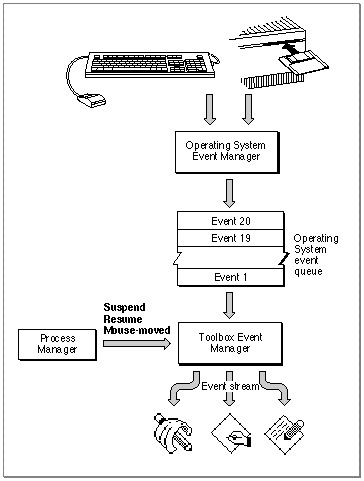

Legacy Document
Important: The information in this document is obsolete and should not be used for new development.
Important: The information in this document is obsolete and should not be used for new development.


Operating-System Events
The cooperative, multitasking environment allows the user to interact with your application and with other applications. The Process Manager coordinates the scheduling of applications, and the Event Manager communicates information about changes in the operating status of applications to the applications involved.For example, when your application is about to be switched into the background, the Event Manager sends it a suspend event. Then, when your application is switched back into the foreground, it receives a resume event. These types of events, as well as a special type of mouse event, the mouse-moved event, are known as operating-system events.
Figure 2-3 illustrates how the Event Manager helps provide this cooperative, multitasking environment. The Process Manager generates suspend, resume, and mouse-moved events, and the Event Manager reports these events to applications.
Figure 2-3 Operating-system events

When your application receives a suspend event, it does not actually switch to the background until it makes its next request to receive events from the Event Manager. At the time that it receives the suspend event, your application should convert any private scrap into the global scrap if necessary. Your application should hide scroll bars, remove the highlighting from any selections, and hide any floating windows. If your application shows a window that displays the Clipboard contents, you should hide this window also. Then you should call
- Note
- If your application sets the acceptSuspendResumeEvents and doesActivateOnFGSwitch flags in its
'SIZE'resource, your application is also responsible for activating or deactivating any windows as appropriate in response to operating-system events. For maximum compatibility, your application should set these flags and handle suspend and resume events. See "The Size Resource" beginning on page 2-115 for more information on these and other flags in the'SIZE'resource.
WaitNextEventto relinquish the CPU and allow the Operating System to schedule other processes for execution. It is important to minimize the processing you do in response to a suspend event so that the computer appears responsive to the user.When control returns to your application, the first event it receives is a resume event. Your application should convert the global scrap back to its private scrap, if necessary. Your application should also restore any windows to the state the user left them in at the time of the previous suspend event. For example, your application should show any scroll bars, highlight any selections, and show any floating windows. See "Responding to Suspend and Resume Events" beginning on page 2-60 for complete details of how your application should respond to these events.
The events that your application can receive in the background are update, null, and high-level events. When your application is in the background, it should not perform any processing that would make the foreground process appear unresponsive to the user. When receiving events in the background, your application should perform any needed action in response to an event and then quickly return.
Your application should never interact with the user when it is in the background. If you need to notify the user of some special occurrence while your application is executing
in the background, you should use the Notification Manager to queue a notification request. You should not attempt to display an alert box while your application is in the background. Instead, your application can specify that the Notification Manager play
a sound, display an alert box, cause a small icon representing your application to
blink in alternation with the Application menu icon, display a diamond next to your application's name in the Application menu, or put a combination of these actions
into effect.These actions are designed to alert the user that another application needs the user's attention. By using the Notification Manager you help maintain the user interface principle of giving the user control, as the user can choose to bring the application requesting attention to the foreground at the user's convenience. See the chapter "Notification Manager" in Inside Macintosh: Processes for examples of how to post notification requests.
Another kind of operating-system event is the mouse-moved event. You can request that the Event Manager send your application a mouse-moved event whenever the cursor
is outside of a region that you specify to theWaitNextEventfunction. For example, you can use mouse-moved events as a convenient way for your application to change the appearance of the cursor as the user moves the cursor from the text area of a document to the scroll bar. See "Responding to Mouse-Moved Events" beginning on page 2-62 for detailed examples.